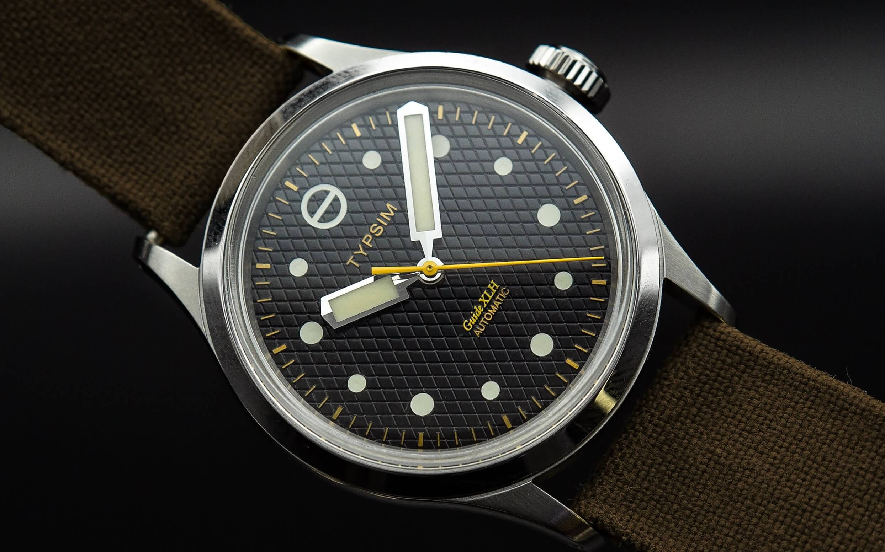
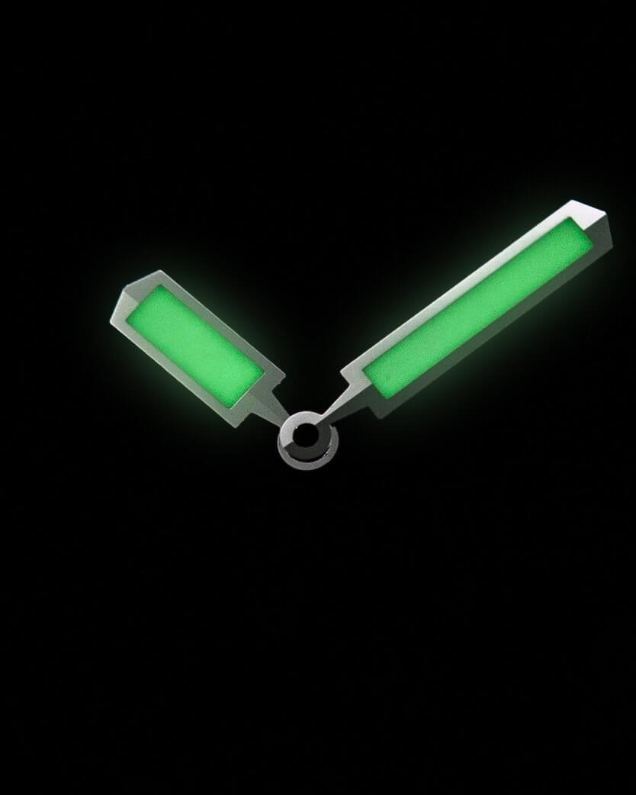
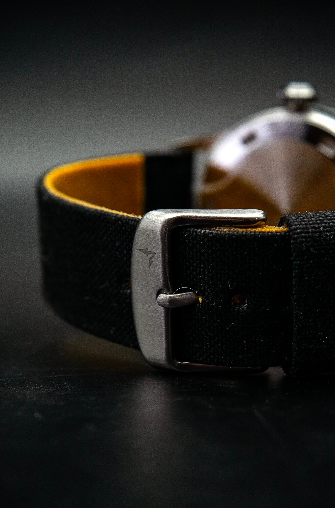
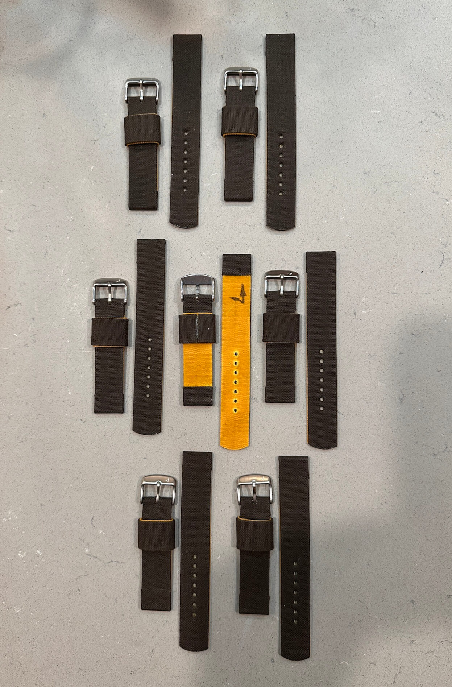

Typsim x Substation: A Case Study in Microbrand Collaboration
I’ll be honest: I have a soft spot for geeky watchmaking. I love when a brand ignores the mass market to obsess over specific details purely for the art of it. And this watch right here? It’s really something else.
 Nenad Pantelic • November 22, 2025
Nenad Pantelic • November 22, 2025

The new Guide XLH by Typsim is the typical field watch, but re-engineered with a visual language that is bold, legible, and to use your word - tactile.
But why is this watch covered on the StrapHunter? We are mostly about the straps around here. Well, while this watch is a Typsim vision, Seattle-based strap maker Substation Ltd. played a crucial role in making it a complete package.
Bigger is Better (Even at 36mm)
Usually when a brand puts "XL" on a model name, it means the case size has bloated to a dinner plate. Typsim flipped the script. The case remains a restrained, vintage-appropriate 36mm stainless steel. The "Extra Large" refers strictly to the functional elements.
The hands on this thing are massive. We are talking 26.0mm2 of surface area for the baton hands. That is nearly triple the amount of lume offered on the standard Guide model. Paired with a comical (in the best way possible) extra-large screw-down crown, the watch feels like a piece of heavy industrial instrumentation shrunken down to a watch size.

The Gilt Dial
For sure these proportions are fun to look at, but don't be deceived. The manufacturing behind this watch is serious.
The dial features a negative-relief gold gilt honeycomb pattern. For us, the uninitiated, this isn't gold paint stamped onto a black dial. This is a laborious, multi-step galvanic process where the dial plate is polished, masked, and plated. The "gold" you see is the base metal shining through the satin black lacquer.
The depth created by the recessed SuperLuminova hour indexes and the honeycomb texture is something you usually only find on vintage watches worth five figures.
The Bespoke Strap
A dial this complex presents a challenge: how do you pair the Guide XLH with a strap without distracting from the main event? Bracelet would be too clinical. You can't just throw generic leather or a rubber strap on a negative-relief gilt dial, either.
Typsim understood this, which is why they didn't go to a factory. They went to a studio.
For the Guide XLH, Matt (the artisan behind Substation) created a stunning two-tone strap featuring a yellow canvas underliner beneath a black top layer. It is a wonderful combination that picks up the warmth of the watch's gilt dial perfectly.
The yellow underliner pulls off a clever trick. Even when viewing the strap head-on, the yellow remains visible through the holes mirroring how the gilt pops against the honeycomb patterned dial. Pretty neat!

Patina-friendly Combo
Typsim uses a proprietary luminous compound designed to develop a natural patina over time. Unlike modern lume, this one will age. And the waxed cotton strap is designed to do the exact same thing. The wax finish records every fold, scratch, and abrasion, lightening at the stress points. This strap ages, evolves, softening nicely over time while remaining virtually indestructible.
Why the "Substation" Connection Matters?
We have seen collaborations like this in the past, where well-known strap makers like Delugs, HasNoBounds, or TwoStitchStraps create a limited run of custom bands for a major watch brand release. Those are great, but this partnership between Typsim and Substation Ltd. feels like it goes beyond that.
It feels like Matt from Substation dug deep into the Typsim story to create a strap that is the perfect counterpoint to the watch.
I was curious to see a brand like Typsim place this much trust in a boutique artisan, but having used Substation products myself, I’m not surprised. I’ve owned one of Substation's straps, made from Filson & Nigel Cabourn collab waxed canvas. After a year of hard wear, it looks badass.
Knowing that quality firsthand, it is clear why Typsim made this choice. The final result is a product where every element, from the case, dial, crystal, to the canvas, feels completely cohesive.

Final Thoughts
This is true small-batch watchmaking. The Guide XLH is (was; sold out already) limited to just five pieces worldwide. It has a chronometer-grade movement, drilled-lugs, a screw-down crown and case back, and a boxy optical acrylic crystal.
But more importantly, it has a special personality that specs alone can’t quantify. I am pretty sure that years from now collectors will be hunting these five examples. They are rare, yes, but they are also significant.
Also, keep a close watch on both Typsim and Substation. They are doing things worth noticing. There are layers, textures, stories, and craft in their work.
The spark is undeniably there. Ignoring the mass market has never felt so good.